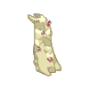
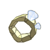
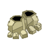
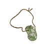
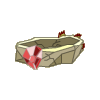
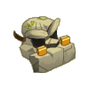
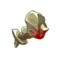

Menu barbok'you

| Niveau 84 | Craquelocape Légendaire | ||
|---|---|---|---|
| Recettes : | Caractéristiques : | Conditions : | |
|  | 30 Pierre de craqueleur 10 Rubis 10 Fragement de pierre polie 3 Fragement de pierre pointue 3 Pierre du craqueleur légendaire 2 Agathe 1 craquelocape |
+51 à 70 vitalité +16 à 25 sagesse +26 à 40 agilité +3 à 4 CC +4 à 5 prospection +5 à 6 résistance feu +5 à 6 résistance air |
aucune |
| Remarques : | |||
| Niveau 84 | Anneau du Craqueuleur Légendaire | ||
|---|---|---|---|
| Recettes : | Caractéristiques : | Conditions : | |
|  | 20 Pierre du craqueleur 6 Pierre du craqueleur légendaire 10 Saphir 7 Ambre de bambouto sacré 3 coeur de craqueleur 1 Diamant 1 méga pierre du craqueleur |
+31 à 50 vitalité +16 à 25 agilité +16 à 25 intelligence +1 portée 4 à 5% résistance air 4 à 5% résistance eau |
aucune |
| Remarques : | |||
| Niveau 86 | Bottes du Craqueleur Légendaire | ||
|---|---|---|---|
| Recettes : | Caractéristiques : | Conditions : | |
|  | 15 Pierre de craqueleur 8 Rubis 8 Saphir 4 Coeur de craqueleur 4 Kriptonite 3 pierre du craqueleur légendaire 1 Bottes du craqueleur |
+1 PM +16 à 25 intelligence +16 à 25 agilité +4 à 5 soins +4 à 5 dommages +5 à 7 résistance eau +5 à 7 résistance terre |
aucune |
| Remarques : | |||
| Niveau 84 | Amulette du Craqueuleur Légendaire | ||
|---|---|---|---|
| Recettes : | Caractéristiques : | Conditions : | |
|  | 25 Fragement de pierre pointue 15 Pierre du craqueleur légendaire 15 Saphir 15 Rubis 4 Topaze 1 Amulette du craqueleur 1 Craquamulette |
+1 PA +31 à 50 vitalité +16 à 25 sagesse +16 à 25 intelligence +16 à 25 agilité +4 à 5 résistance eau +4 à 5 résistance terre |
aucune |
| Remarques : | |||
| Niveau 80 | Ceinture du Craqueleur | ||
|---|---|---|---|
| Recettes : | Caractéristiques : | Conditions : | |
|  | 10 Pierre du craqueleur 10 Ebonite 10 Fragement de pierre polie 5 Saphir 5 Rubis 2 Pierre du craqueleur légendaire 1 Ceinture du craqueleur |
+21 à 35 vitalité +16 à 25 sagesse +16 à 25 agilité +201 à 300 pods +4 à 5 dommages +1 créature invocable +101 à 150 initiative |
aucune |
| Remarques : | |||
| Niveau 80 | Casque du Craqueleur Légendaire | ||
|---|---|---|---|
| Recettes : | Caractéristiques : | Conditions : | |
|  | 50 Silex 16 Pierre du craqueleur 8 Rubis 5 Fragement de pierre pointue 5 pierre du craqueleur légendaire 2 Agathe 1 Casque du craqueleur |
+41 à 60 vitalité +16 à 25 sagesse +26 à 35 agilité +2 à 3 CC +11 à 15% dommages +1 portée +101 à 200 initiative +5 à 7 résistance feu +5 à 7 résistance air |
aucune |
| Remarques : | |||
| Niveau 84 | Marteau du Craqueleur | |||
|---|---|---|---|---|
| Recettes : | Effets : | Caractéristiques : | Conditions : | |
|  | 30 Pierre du craqueleur 15 Silex 10 dents en or du craqueleur 4 kouartz 3 pierre du craqueleur légendaire 1 Méga pierre du craqueleur 1 Lame du craqueleur |
Dom : 13 à 24 (air) Dom : 9 à 14 (neutre) +26 à 35 intelligence +26 à 35 agilité +4 à 5 dommages +11 à 15% dommages |
PA : 5 Portée : 1 à 1 Bonus CC : +7 Critique : 1/50 Echec : 1/50 |
agilité > 100 intelligence > 50 |
| Remarques : | ||||
| 1 Items | Aucun bonus |
|---|---|
| 2 Items | +10 Agilité / +10 Initiative |
| 3 Items | +1 CC / +20 Initiative |
| 4 Items | +2 CC / +40 Initiative |
| 5 Items | +4CC / +60 Initiative / +10 Sagesse |
| 6 Items | +80 Initiative / +6 CC / +20 Sagesse |
| 7 Items | +100 Initiative / +8 CC / +30 Sagesse / +1 PA / +10% Résistance terre / +10% Résistance eau |
Dofus est un MMORPG édité par Ankama." Barbok " est un site non-officiel sans aucun lien avec Ankama.
Toutes les illustrations sont la propriété d'Ankama Studio et de Dofus. Le contenu de ce site a été rédigé initialement par Immortal, il ne s'agit que d'une remise en ligne effectuée par Eternal Games.